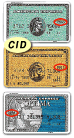

|
What is a Card Identification Number? |
| The Customer Card ID Number (CID or CVV2) is a three or four digit number that is unique to each card. This additional security feature is designed to protect you by helping to ensure the card is present during the purchase. It is printed only on the card, never on any receipts or statements. | |
| Visa and MasterCard | |
| CVV2: A new Three-Digit Value An important new security feature for card-not present transactions now appears on the back of most Visa cards. This new feature is a three-digit value which provides a cryptographic check of the information embossed on the card. |
|
| CVV2’s Location The CVV2 three-digit value is printed on the signature panel on the back of Visa cards immediately following the Visa card account number. The CVV2 value helps validate two things:
|
|
| American Express Card | |
| The Card Identification # is the 4 digit, non-embossed number printed above your account number on the face of your card. This number is recorded as an additional security precaution. Private Payment User? Please use the CID from your issued American Express Card. If your AMEX account number does not have a plastic card associated with it, then you do not have a Card Identification #. In this case, you should enter the last 4 digits of your AMEX account number in the Card Identification # field in order for your transaction to be processed. |
 |
| If you cannot find the Card Identification Number on your credit card, please contact your credit card issuer to confirm whether your credit card contains the number, and if so where the number is located. | |